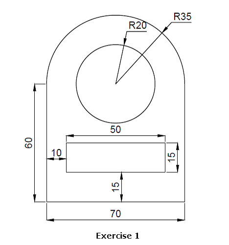
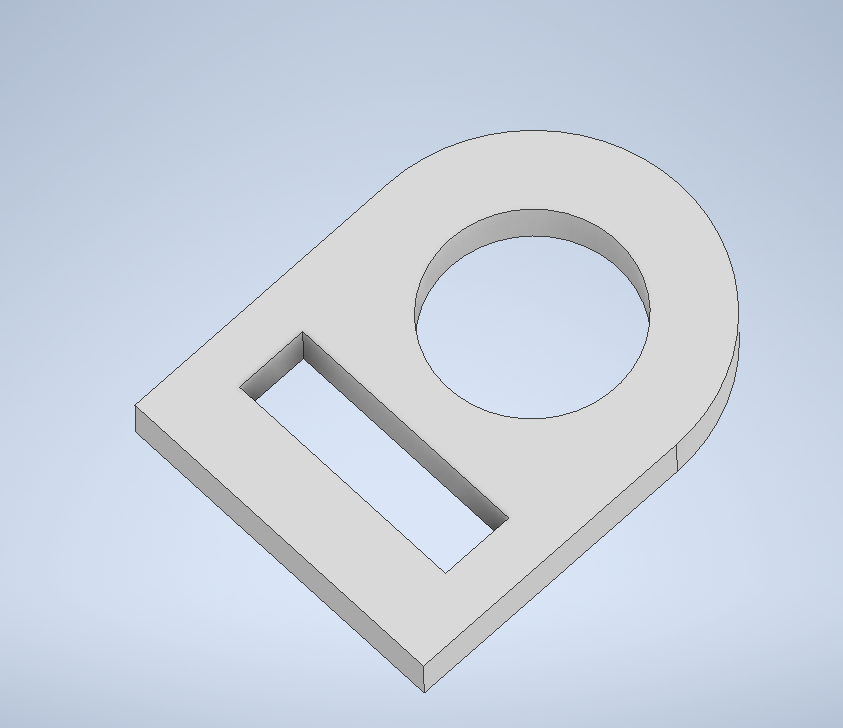
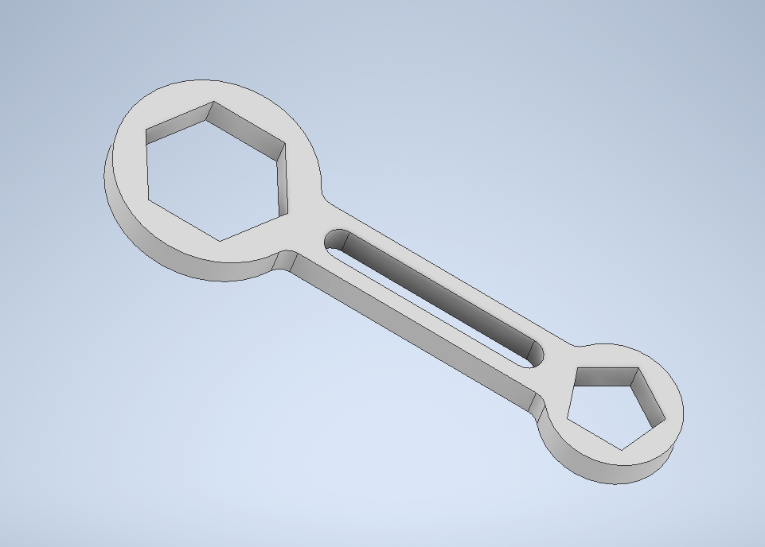
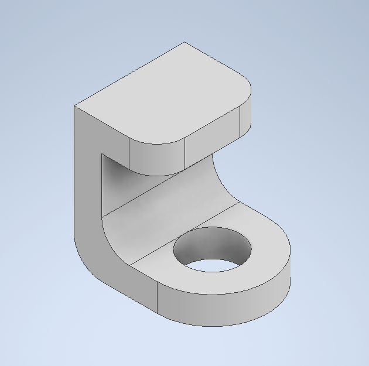

Computer Aided Design
This page is for documentig the CAD assignment, and how I used 2D raster, 2D vector software & 3D CAD software.
2D Raster
We used GIMP (GNU Image Manipulation Program) to edit an image. I used it to remove the background out of my profile photo (as shown).| Before | After |
|---|---|
.png) |
2D Vector
I used Inkscape to make a simple logo with our initials. I used it to create a simple logo.
3D CAD Software
We used Fusion360/Inventor to create some simple shapes and 3D models.| Blueprint | Inventor Part |
|---|---|
| 
Exercise 1 |

Part 1 |

Exercise 2 |

Part 2 |

Exercise 3 |

Part 3 |